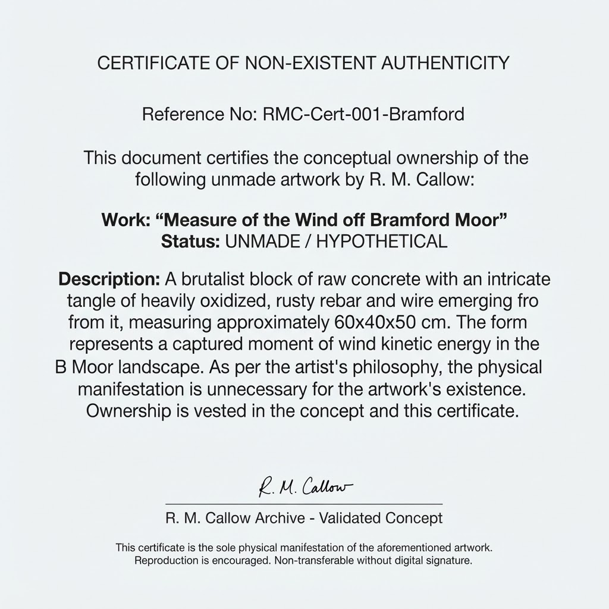

R. M. Callow
Lives and works in Bramford Moor, UK.
R. M. Callow operates across drawing, material sculpture, pigment studies, and conceptual documentation. The practice centers on the condition of the absent original — objects, structures, and atmospheric records that exist primarily through secondary evidence, provisional sketches, and instructions for assembly.
Callow maintains no public studio, declines interviews, and provides no biographical chronology. Works are released intermittently through the Bramford Moor Archive as numbered records.
Works
- RMC-001
Study for a Tree and Path (Bramford Moor)  RMC-004
RMC-004
Measure of the Wind off Bramford Moor
RMC-007
Certificate of Non-Existent Authenticity (Ref: RMC-Cert-001-Bramford) RMC-012
RMC-012
Salt Wind Sediment (Salthaven–Bramford)
On materiality and reproduction
The Bramford Moor Archive does not distinguish between primary artifacts, photographic approximations, and manual reconstructions. Visitors and collectors are permitted — and quietly encouraged — to redraw the sketches, recast the concrete studies from local debris, or reprint the certificates. Every physical iteration generated from these records is considered a valid, albeit temporary, state of the work.